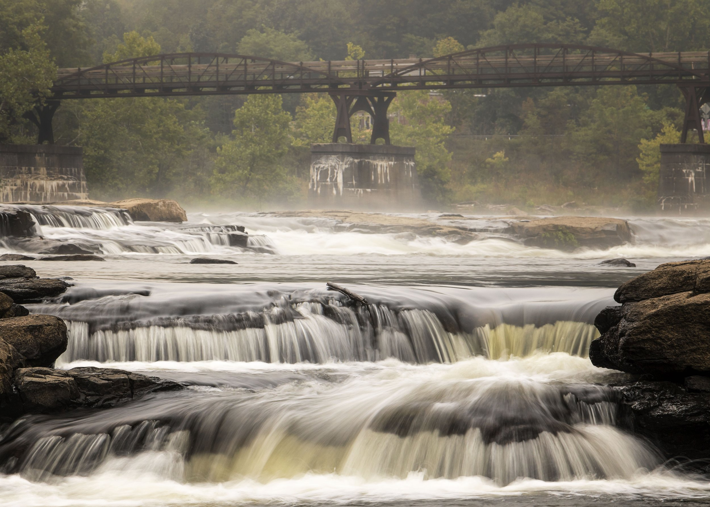

Rafting is a fun and exciting way to explore the beautiful Tama River in Okutama. Guiding you down a number of rapids, playing games with our rafts and stopping at a good jump rock too. Discover the beauty of River, known for its splendid gorges and wonderful opportunities for water sports.

Moab, Utah is a breathtaking location where the Green and Colorado Rivers unite at "The Confluence," marking the start of Cataract Canyon. This area is situated in Canyonlands National Park and spans over 100 miles, with the Colorado River's power amplified by the Green River. The Cataract Classic 4-day expedition offers an exciting experience with class III-V whitewater rapids on the Colorado River, along with serene stretches of river winding through stunning canyons and awe-inspiring geological formations.

Ohiopyle whitewater rafting is an adventure that provides a thrill like no other. With rapids ranging from class II to IV, Ohiopyle offers an adrenaline-pumping experience for all levels of rafters. The rapids are caused by the Youghiogheny River, which flows through the park and offers a challenging but rewarding rafting experience.
| Location | Rafting Times | Rating | Avalibility |
|---|---|---|---|
| Bahamas | 10:00-8:00 | 8/10 | 5 reservations left |
| Utah | 8:00-6:00 | 9/10 | 2 reservations left |
| Japan | 7:00-6:00 | 8/10 | 9 reservations left |
| Michigan | 6:00-4:00 | 6/10 | 12 reservations left |
| Ohio | 6:00-9:00 | 9/10 | 0 reservations left |